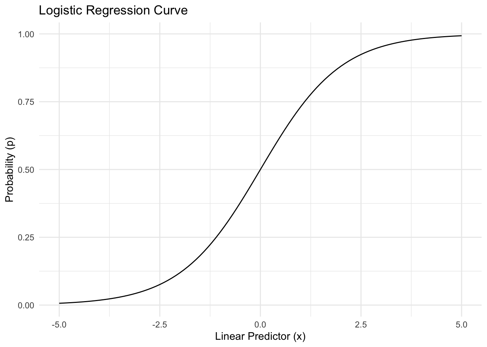
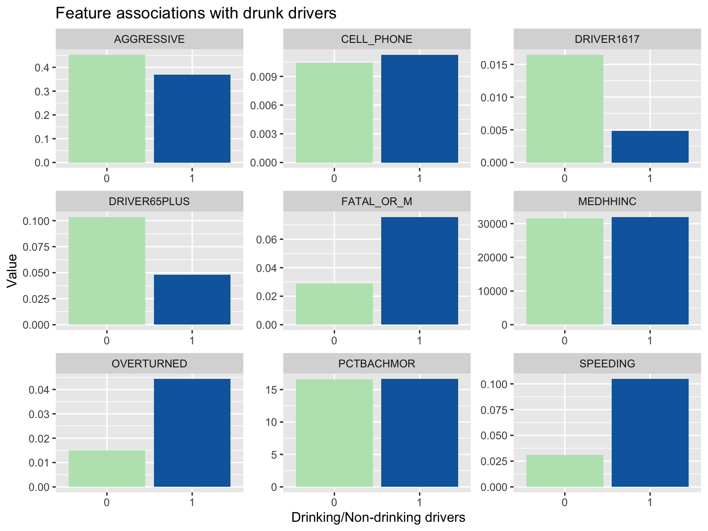
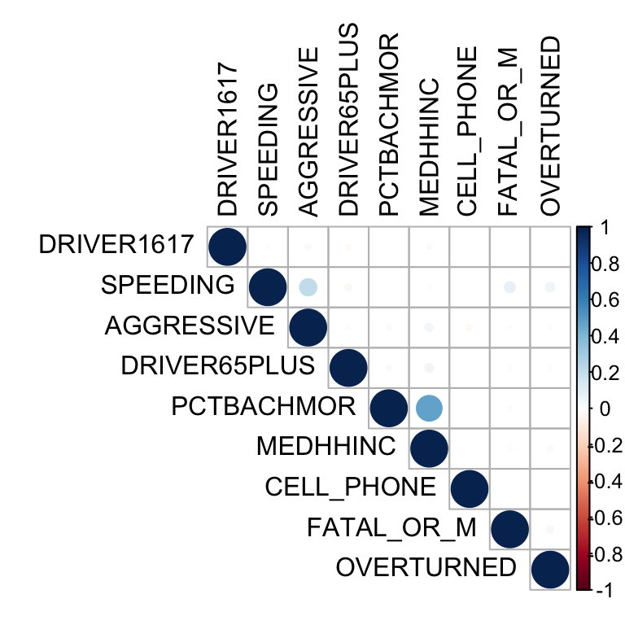
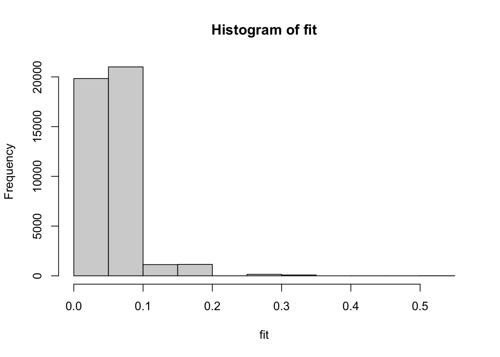
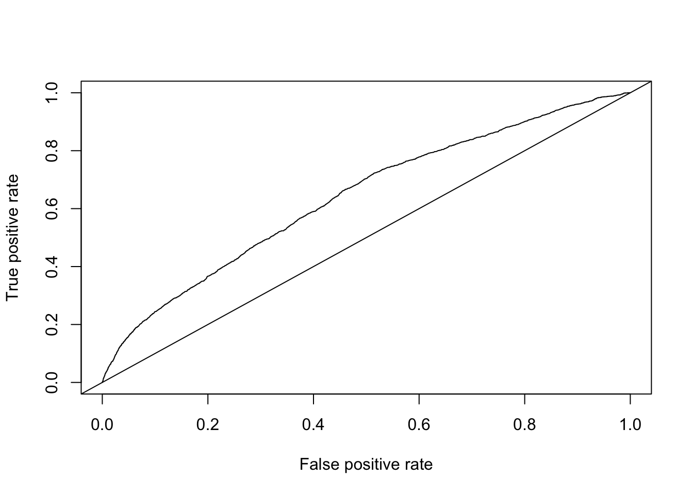

MUSA500 Homework 3: The Application of Logistic Regression to Examine the Predictors of Car Crashes Caused by Alcohol
Introduction
Traffic safety is a critical global concern, with vehicular fatalities being a particularly prominent issue. Driving under the influence of alcohol is exceedingly hazardous and poses a significant threat to public safety. In the US itself, according to the United States Department of Transportation, approximately 31% of all traffic-related fatalities in the US are attributed to incidents involving drivers under the influence of alcohol. Every day in the United States, 32 individuals lose their lives in accidents that involve an alcohol-impaired driver, equating to a fatality approximately every 45 minutes (NHTSA, 2020). Philadelphia, renowned as one of the United States’ most historic cities and the most populous county in Pennsylvania, is characterized by traffic systems that are significantly outdated and complex. These conditions amplify the potential for vehicular accidents within the city. In response, Philadelphia has initiated the ambitious Vision Zero initiative, which aimed to eliminate all traffic-related fatalities and severe injuries on its streets by 2030 (City of Philadelphia, 2023). This proactive approach underscores the city’s commitment to enhancing road safety and protecting its citizens.
In this report, we will analyze a dataset containing 43,364 vehicular crashes that occurred within the residential block groups of Philadelphia from 2008 to 2012. Our objective is to discern the predictors of accidents involving drunk driving. The dependent variable DRINKING_D is a binary indicator of the presence of a drinking driver, where 1 means ‘Yes’ and 0 means ‘No’. Our predictor variables are a blend of binary and continuous types, including crash resulted in fatality or major injury, crash involved an overturned vehicle, drivers was using cell phone, crash involved speeding car, crash involved aggressive driving, crash involved at least one driver who was 16 or 17 years old, crash involved at least one driver who was at least 65 years old, percentage of individuals 25 years of age or older who have at least a bachelor’s degree in the census block group where the crash took place, and the median household income in that census block group. By examining these predictors in relation to the DRINKING_D variable using logistic regression analysis in R, the analysis aims to identify patterns and factors that contribute to the risk of alcohol-impaired driving in Philadelphia’s residential areas. The findings could provide valuable insights for targeted prevention strategies and policy interventions to reduce drunk-driving incidents.
Methodology
Why not OLS Regression for DV is binary?
Previously, we have performed Ordinary Least Squares (OLS) regression for continuous dependent variables, where the beta coefficients represent the amount of changes in the dependent variable Y corresponding to a one-unit increase in predictor X. However, in the current context, the dependent variable is binary, taking on values of either 0 or 1. Consequently, a one-unit increase in X does not translate to a proportional change in Y, since Y can only switch between the binary states of 0 and 1. Therefore, the concept of a beta coefficient increase in Y as used in OLS is inapplicable here.
Logistic Regression: Overview
The Logit Function
Instead, predicting P(Y=1|X=x), the probability that Y=1 could be an alternative, with a translator function such that the closer the predicted y value from linear regression model is to negative infinite, the closer our predicted probability is to 0, and the closer the y predicted value is to positive infinite, the closer predicted probability is to 1, with no predicted probabilities are less than 0 or greater than 1. This translator function here we are going to use is the Logit Function, which has an equation looks like this for one predictor:
\[ \ln\left(\frac{p}{1 - p}\right) = \beta_0 + \beta_1 x_1 + \varepsilon \] Where p = P(Y=1), and the quantity ‘p/(1-p)’ is called the odds, and the quantity ln(p/(1-p)) is called the log odds, or logit. In another words, the odds may be calculated as the desirable outcomes divided by the undesirable outcomes, showing as follows: \[ Odds = \frac{\#\ \text{desirable outcomes}}{\#\ \text{undesirable outcomes}} \]
Logistic function, or the inverse-logit function, is another form of logit function, which can be expressed as: \[ p = \frac{e^{\beta_{0} + \beta_{1} x_{1}}}{1 + e^{\beta_{0} + \beta_{1} x_{1}}} = \frac{1}{1 + e^{-\left(\beta_{0} + \beta_{1} x_{1}\right)}} \] Express the logistic function in the form of line graph, it looks like a ‘S’ shape, which is plotted below:
From the graph we can see that when \(\beta_0\) + \(\beta_1\)X1 equals to zero, the probability of Y=1 is 50%; As \(\beta_0\) + \(\beta_1\)X1 becomes larger, p approaches to 1; As \(\beta_0\) + \(\beta_1\)X1 becomes smaller, p approaches to 0.
Regression Equation for Logit Model
Our car crash data set has 43,364 observations. The relevant variables are described below:
- Dependent Variable:
DRINKING_D, Drinking driver indicator (1 = Yes, 0 = No) - Predictor:
FATAL_OR_M, Crash resulted in fatality or major injury (1 = Yes, 0 = No) - Predictor:
OVERTURNED, Crash involved an overturned vehicle (1 = Yes, 0 = No) - Predictor:
CELL_PHONE, Driver was using cell phone (1= Yes, 0 = No) - Predictor:
SPEEDING, Crash involved speeding car (1 = Yes, 0 = No) - Predictor:
AGGRESSIVE, Crash involved aggressive driving (1 = Yes, 0 = No) - Predictor:
DRIVER1617, Crash involved at least one driver who was 16 or 17 years old (1 = Yes, 0 = No) - Predictor:
DRIVER65PLUS, Crash involved at least one driver who was at least 65 years old (1 = Yes, 0 = No) - Predictor:
PCTBACHMOR,% of individuals 25 years of age or older who have at least a bachelor’s degree in the Census Block Group where the crash took place - Predictor:
MEDHHINC, Median household income in the Census Block Group where the crash took place
The logit function of the regression model, which incorporates multiple predictors (our model includes nine predictors, of which seven are binary and two are continuous), can be articulated as follows:
\[ \begin{aligned} ODDS(DRINKING\_D=1) = \beta_0 + \beta_1FATAL\_OR\_M + \beta_2OVERTURNED + \beta_3CELL\_PHONE \\ + \beta_4SPEEDING + \beta_5AGGRESSIVE + \beta_6DRIVER1617 + \beta_7DRIVER65PLUS + \beta_8PCTBACHMOR \\ + \beta_9 MEDHHINC + \varepsilon \end{aligned} \]
The equation represents the log odds of the event where Y equals 1, corresponding to the dependent variable DRINKING_D being 1. This indicates the scenario where a drinking driver is involved. It’s calculated as the ratio of the probability of DRINKING_D equals to 1 (presence of a drinking driver) to the probability of DRINKING_D does not equals to 1 (absence of a drinking driver).
When Beta coefficient is positive, it indicates that as the predictor variable increases, the log odds of the outcome occurring increases, meaning the outcome becomes more likely, when beta coefficient is negative, the log odds of the outcome occurring decreases when predictor variable increases, and the outcome becomes less likely.
Solving the equation of logit function to make p=P(Y=1), we can get a function generally known as the inverse logit, or the logistic function, in which it has the equation like this:
\[ p = \frac{e^{\beta_0 + \beta_1 x_1}}{1 + e^{\beta_0 + \beta_1 x_1}} = \frac{1}{1 + e^{-(\beta_0 + \beta_1 x_1)}} \]
Plugging in the variables that we are interested in, in this case are the car crash model variables:
\[ \begin{aligned} p &= P(DRINKING\_D=1) \\ &= \frac{1}{1 + e^{-(\beta_0 + \beta_1FATAL\_OR\_M + \beta_2 OVERTURNED + \ldots + \beta_9 MEDHHINC)}} \\ &= \frac{1}{1 + e^{-\left(\beta_0 + \sum_{i=1}^{9} \beta_{i} \times X_{i}\right)}} \end{aligned} \]
Hypothesis Testing
In executing the logistic regression, our initial step involves testing the null hypothesis (H0), which considers that \(\beta_i\) = 0. This implies that the ith independent variable has no impact on the log-odds of the outcome. We contrast this with the alternative hypothesis (Ha), which asserts that \(\beta_i\) \(\neq\) 0, suggesting that the independent variable in question does indeed affect the log-odds of the outcome. This framework is crucial for determining the significance of each predictor in the model. Then, we will look at the quantity, which is sometimes called the Wald statistic within the context of logistic regression, to examine the hypothesis test. The Wald statistic follows a standard normal distribution under the null hypothesis. Thus, the quantity of the Wald statistics is equivalent to a z-score in a standard normal distribution. Then, we can find the p-value associated with the Wald statistics referencing the standard normal (z) distribution tables. If the Wald statistic is far from zero, which corresponds to a small p-value in the standard normal (z) distribution tables, we can reject the null hypothesis and get the conclusion that the independent variable has a significant effect on the outcome.
At the same time, in the context of logistic regression, while the estimated \(\beta\) coefficients provide valuable information about the direction and magnitude of the effect a predictor variable has on the log-odds of the outcome, many statisticians and researchers also interpret the results based on odds ratios. The reason is that odds ratios offer a clear and interpretable measure of the strength and direction of the association between the predictor variables and the binary outcome. An odds ratio (OR) is the exponentiated form of the logistic regression coefficient. This transformation is particularly useful because it translates the coefficients into a multiplicative effect on the odds of the outcome occurring for a one-unit increase in the predictor variable. When the odds ratio is: Greater than 1, it indicates that as the predictor increases by one unit, the odds of the outcome occurring increase. Less than 1, it indicates that as the predictor increases by one unit, the odds of the outcome occurring decrease. Exactly 1, it indicates that as the predictor has no effect on the odds of the outcome occurring.
Quality of Model Fit
Unlike OLS regression, R-Squared can’t be interpreted in logistic regression as the % of variance explained by the model. As there is no continuous outcome variable to explain variance for. Instead, it models the probability of an event occurring based on other independent variables.
Akaike Information Criterion (AIC) is a measure of the goodness of fit of an estimated statistical model. It’s a relative measure of the information that is lost when a given model is used to describe reality and can be said to describe the tradeoff between precision and complexity of the model. Typically, the lower AIC, the better the fit.
Sensitivity (True Positive Rate) measures the proportion of actual positives which are correctly identified as such and is complementary to the False Negative Rate. Specificity (Ture Negative Rate) measures the proportion of negatives which are correctly identified as such and is complementary to the False Positive Rate. Misclassification rate refers to both False Negative Rate and False Positive Rate. Technically, we’re looking for more correct predictions, for example, being able to predict a high probability of Y=1 if Y is actually 1, and a low probability of Y=1 if Y is actually 0. That’s being said, higher values of sensitivity and specificity are better. The fitted values 𝑦̂, which refer to probabilities that Y=1.
\[ P(Y = 1) = \hat{y}_i = \frac{e^{\hat{\beta}_0 + \hat{\beta}_1 x_{1i} + \ldots + \hat{\beta}_3 x_{3i}}}{1 + e^{\hat{\beta}_0 + \hat{\beta}_1 x_{1i} + \ldots + \hat{\beta}_3 x_{3i}}} \]
And similarly, \[ \epsilon = y_i - \hat{y}_i \]
The choice of cut-off value demonstrates the trade-offs between different specificity and sensitivity and really depends on different scenarios. Using a cut-off of 0.5 may not be suitable for imbalanced datasets. Ideally, we should choose a cut-off value that will somehow balance and optimize the sensitivity and specificity.
ROC curve is a way to plot sensitivity (True Positive Rate) against Specificity (False Positive Rate), it can be used to examine predictive quality of the model and determine a best cut-off value by optimizing sensitivity and specificity. When interpreting the ROC Curve plot, a cut-off for which the ROC curve has the minimum distance from the upper left corner of the graph maximizes sensitivity and specificity. We can also look at the Youden index, a cut-off for which sensitivity and specificity is maximized. For area under ROC Curve(AUC), it is a measure of prediction accuracy of the model. Usually, higher AUCs mean that we can find a cut-off value for which both sensitivity and specificity of the model are relatively high. The possible values range between 0.5 and 1, a rough guide for classifying the accuracy is: * .90-1 = excellent; * .80-.90 = good; * .70-.80 = fair; * .60-.70 = poor; * .50-.60 = fail; AUC may be interpreted as the probability that the model correctly ranks two randomly selected observations where one has Y=1 and the other one has Y=0.
Assumptions of Logistic Regression
With OLS regression, we need to make sure the linear relationship between dependent variable and each predictor, the normality of residuals, and homoscedasticity. But in Logistic regression, there’re no such assumptions. However, the dependent variable in logistic regression must be binary. Also, there should be independence of observations and no severe multicollinearity. Besides that, larger samples are also needed than for OLS because Maximum Likelihood Estimation is used to estimate regression coefficients. For example, at least 50 observations per predictor are needed, compared to about 10 pre predictor in OLS regression.
Exploratory Analysis Before Logistic Regression
Prior to executing logistic regression, we will conduct exploratory analyses to gain a thorough understanding of the dataset and the interrelations among variables. Initially, we will go through the process of cross-tabulations. This technique examines the connections between the dependent binary variable and other binary predictors. Utilizing R, we’ll construct contingency tables to display the variables’ frequency distributions. Additionally, we will apply the Chi-Square (\(\chi^2\)) test in R to determine if the distribution of one categorical variable depends on another. For example, a cross-tabulation of the DRINKING_D and FATAL_OR_M variables will test the Null Hypothesis (H0): There is no discrepancy in fatality rates between crashes with alcohol-impaired drivers and those without. Conversely, the Alternative Hypothesis (Ha) states that such a discrepancy exists. A significant \(\chi^2\) statistic, combined with a p-value under 0.05, would suggest enough evidence to reject the null hypothesis. In other words, we can conclude there is a significant association between alcohol impairment in drivers and the likelihood of crash fatalities.
Further, we will conduct an independent samples t-test to compare the means of a continuous variable across two distinct groups. This test is designed to discern whether any observed mean differences are random or indicative of a genuine disparity in the population. For instance, using PCTBACHMOR as an example, the test will find out if there is a statistically significant mean difference in PCTBACHMOR between crashes with and without alcohol-impaired drivers. Here, the null hypothesis (H0) states that there is no mean difference in PCTBACHMOR values between the two groups, while the alternative hypothesis (Ha) suggests a disparity. Should the t-statistic be significantly high, and the p-value falls beneath 0.05, we would reject H0, concluding a notable difference in average PCTBACHMOR values between crashes involving alcohol-impaired drivers and those that do not.
Results
Exploratory analysis
CRN DRINKING_D COLLISION_ FATAL_OR_M OVERTURNED CELL_PHONE SPEEDING
1 200806719 0 7 0 0 0 0
2 200807695 0 7 1 0 0 0
3 200808809 0 8 0 0 0 0
4 200809857 0 5 0 0 0 0
5 200812736 0 1 0 0 0 0
6 200907381 1 7 1 0 0 0
AGGRESSIVE DRIVER1617 DRIVER65PLUS AREAKEY PCTBACHMOR MEDHHINC
1 0 0 0 421010001001 64.4737 49107
2 1 0 0 421010001001 64.4737 49107
3 0 0 0 421010001001 64.4737 49107
4 1 0 0 421010001001 64.4737 49107
5 0 0 0 421010001001 64.4737 49107
6 0 0 1 421010001001 64.4737 49107Tabulation of the Dependent Variable & Predictors
Let’s look at the tabulation of our binary dependent variable, ‘DRINKING_D’.
CRN DRINKING_D COLLISION_ FATAL_OR_M
Min. :200800863 Min. :0.00000 Min. :0.000 Min. :0.00000
1st Qu.:200905452 1st Qu.:0.00000 1st Qu.:2.000 1st Qu.:0.00000
Median :201008468 Median :0.00000 Median :4.000 Median :0.00000
Mean :201021771 Mean :0.05731 Mean :4.433 Mean :0.03157
3rd Qu.:201111811 3rd Qu.:0.00000 3rd Qu.:7.000 3rd Qu.:0.00000
Max. :201303171 Max. :1.00000 Max. :9.000 Max. :1.00000
OVERTURNED CELL_PHONE SPEEDING AGGRESSIVE
Min. :0.00000 Min. :0.00000 Min. :0.00000 Min. :0.0000
1st Qu.:0.00000 1st Qu.:0.00000 1st Qu.:0.00000 1st Qu.:0.0000
Median :0.00000 Median :0.00000 Median :0.00000 Median :0.0000
Mean :0.01665 Mean :0.01047 Mean :0.03508 Mean :0.4483
3rd Qu.:0.00000 3rd Qu.:0.00000 3rd Qu.:0.00000 3rd Qu.:1.0000
Max. :1.00000 Max. :1.00000 Max. :1.00000 Max. :1.0000
DRIVER1617 DRIVER65PLUS AREAKEY PCTBACHMOR
Min. :0.00000 Min. :0.0000 Min. :421010001001 Min. : 0.000
1st Qu.:0.00000 1st Qu.:0.0000 1st Qu.:421010104004 1st Qu.: 5.176
Median :0.00000 Median :0.0000 Median :421010194001 Median :10.015
Mean :0.01582 Mean :0.1005 Mean :421010195889 Mean :16.572
3rd Qu.:0.00000 3rd Qu.:0.0000 3rd Qu.:421010292004 3rd Qu.:20.758
Max. :1.00000 Max. :1.0000 Max. :421010366001 Max. :92.987
MEDHHINC
Min. : 2499
1st Qu.: 21277
Median : 29464
Mean : 31513
3rd Qu.: 38068
Max. :200001
0 1
40879 2485
0 1
0.9426944 0.0573056 We see that there are 94.3% drivers who drink while driving, and only 5.7% who don’t drink. The probability of drivers who drink while driving can be calculated using the formula
\[Probability(DRINKING) = \frac{Number \; of \; Drinking \; Driver}{Total \; Number \; of \; Drivers} = \frac{40879}{43364} = .94. \]
Similarly, the odds of drinking drivers can be calculated using the formula
\[Odds(DRINKING) = \frac{Number \; of \; Drinking \; Drivers}{Number \; of \; Non-drinking \; Drivers} = \frac{40879}{2485} = 16.45. \]
Cell Contents
|-------------------------|
| N |
| N / Col Total |
|-------------------------|
Total Observations in Table: 43364
| mydata$FATAL_OR_M
mydata$DRINKING_D | 0 | 1 | Row Total |
------------------|-----------|-----------|-----------|
0 | 39698 | 1181 | 40879 |
| 0.945 | 0.863 | |
------------------|-----------|-----------|-----------|
1 | 2297 | 188 | 2485 |
| 0.055 | 0.137 | |
------------------|-----------|-----------|-----------|
Column Total | 41995 | 1369 | 43364 |
| 0.968 | 0.032 | |
------------------|-----------|-----------|-----------|
Statistics for All Table Factors
Pearson's Chi-squared test
------------------------------------------------------------
Chi^2 = 167.5615 d.f. = 1 p = 0.00000000000000000000000000000000000002522202
Pearson's Chi-squared test with Yates' continuity correction
------------------------------------------------------------
Chi^2 = 166.0354 d.f. = 1 p = 0.00000000000000000000000000000000000005434077
Cell Contents
|-------------------------|
| N |
| N / Col Total |
|-------------------------|
Total Observations in Table: 43364
| mydata$OVERTURNED
mydata$DRINKING_D | 0 | 1 | Row Total |
------------------|-----------|-----------|-----------|
0 | 40267 | 612 | 40879 |
| 0.944 | 0.848 | |
------------------|-----------|-----------|-----------|
1 | 2375 | 110 | 2485 |
| 0.056 | 0.152 | |
------------------|-----------|-----------|-----------|
Column Total | 42642 | 722 | 43364 |
| 0.983 | 0.017 | |
------------------|-----------|-----------|-----------|
Statistics for All Table Factors
Pearson's Chi-squared test
------------------------------------------------------------
Chi^2 = 122.788 d.f. = 1 p = 0.0000000000000000000000000001551762
Pearson's Chi-squared test with Yates' continuity correction
------------------------------------------------------------
Chi^2 = 121.0052 d.f. = 1 p = 0.000000000000000000000000000381124
Cell Contents
|-------------------------|
| N |
| N / Col Total |
|-------------------------|
Total Observations in Table: 43364
| mydata$CELL_PHONE
mydata$DRINKING_D | 0 | 1 | Row Total |
------------------|-----------|-----------|-----------|
0 | 40453 | 426 | 40879 |
| 0.943 | 0.938 | |
------------------|-----------|-----------|-----------|
1 | 2457 | 28 | 2485 |
| 0.057 | 0.062 | |
------------------|-----------|-----------|-----------|
Column Total | 42910 | 454 | 43364 |
| 0.990 | 0.010 | |
------------------|-----------|-----------|-----------|
Statistics for All Table Factors
Pearson's Chi-squared test
------------------------------------------------------------
Chi^2 = 0.162071 d.f. = 1 p = 0.6872569
Pearson's Chi-squared test with Yates' continuity correction
------------------------------------------------------------
Chi^2 = 0.09065262 d.f. = 1 p = 0.7633491
Cell Contents
|-------------------------|
| N |
| N / Col Total |
|-------------------------|
Total Observations in Table: 43364
| mydata$SPEEDING
mydata$DRINKING_D | 0 | 1 | Row Total |
------------------|-----------|-----------|-----------|
0 | 39618 | 1261 | 40879 |
| 0.947 | 0.829 | |
------------------|-----------|-----------|-----------|
1 | 2225 | 260 | 2485 |
| 0.053 | 0.171 | |
------------------|-----------|-----------|-----------|
Column Total | 41843 | 1521 | 43364 |
| 0.965 | 0.035 | |
------------------|-----------|-----------|-----------|
Statistics for All Table Factors
Pearson's Chi-squared test
------------------------------------------------------------
Chi^2 = 376.7808 d.f. = 1 p = 0.000000000000000000000000000000000000000000000000000000000000000000000000000000000006249562
Pearson's Chi-squared test with Yates' continuity correction
------------------------------------------------------------
Chi^2 = 374.6039 d.f. = 1 p = 0.00000000000000000000000000000000000000000000000000000000000000000000000000000000001861184
Cell Contents
|-------------------------|
| N |
| N / Col Total |
|-------------------------|
Total Observations in Table: 43364
| mydata$AGGRESSIVE
mydata$DRINKING_D | 0 | 1 | Row Total |
------------------|-----------|-----------|-----------|
0 | 22357 | 18522 | 40879 |
| 0.934 | 0.953 | |
------------------|-----------|-----------|-----------|
1 | 1569 | 916 | 2485 |
| 0.066 | 0.047 | |
------------------|-----------|-----------|-----------|
Column Total | 23926 | 19438 | 43364 |
| 0.552 | 0.448 | |
------------------|-----------|-----------|-----------|
Statistics for All Table Factors
Pearson's Chi-squared test
------------------------------------------------------------
Chi^2 = 67.60186 d.f. = 1 p = 0.000000000000000200079
Pearson's Chi-squared test with Yates' continuity correction
------------------------------------------------------------
Chi^2 = 67.2607 d.f. = 1 p = 0.0000000000000002378758
Cell Contents
|-------------------------|
| N |
| N / Col Total |
|-------------------------|
Total Observations in Table: 43364
| mydata$DRIVER1617
mydata$DRINKING_D | 0 | 1 | Row Total |
------------------|-----------|-----------|-----------|
0 | 40205 | 674 | 40879 |
| 0.942 | 0.983 | |
------------------|-----------|-----------|-----------|
1 | 2473 | 12 | 2485 |
| 0.058 | 0.017 | |
------------------|-----------|-----------|-----------|
Column Total | 42678 | 686 | 43364 |
| 0.984 | 0.016 | |
------------------|-----------|-----------|-----------|
Statistics for All Table Factors
Pearson's Chi-squared test
------------------------------------------------------------
Chi^2 = 20.45167 d.f. = 1 p = 0.000006115619
Pearson's Chi-squared test with Yates' continuity correction
------------------------------------------------------------
Chi^2 = 19.7097 d.f. = 1 p = 0.000009014275
Cell Contents
|-------------------------|
| N |
| N / Col Total |
|-------------------------|
Total Observations in Table: 43364
| mydata$DRIVER65PLUS
mydata$DRINKING_D | 0 | 1 | Row Total |
------------------|-----------|-----------|-----------|
0 | 36642 | 4237 | 40879 |
| 0.939 | 0.973 | |
------------------|-----------|-----------|-----------|
1 | 2366 | 119 | 2485 |
| 0.061 | 0.027 | |
------------------|-----------|-----------|-----------|
Column Total | 39008 | 4356 | 43364 |
| 0.900 | 0.100 | |
------------------|-----------|-----------|-----------|
Statistics for All Table Factors
Pearson's Chi-squared test
------------------------------------------------------------
Chi^2 = 80.6047 d.f. = 1 p = 0.000000000000000000275703
Pearson's Chi-squared test with Yates' continuity correction
------------------------------------------------------------
Chi^2 = 79.9888 d.f. = 1 p = 0.0000000000000000003765375
Prior to the predictive modeling, we use the Chi-Square test to determine whether the distribution of the categorical variable varies with respect to the drunk driving. From the table below, we can see that the majority of the variables except cell phone have a P-value lower than 0.05. Therefore, we can reject the null hypothesis and confirm that there are associations between drunk driving and overturned vehicle, speeding car, aggressive driving,young driver, old drivers, crash fatalities.
| Traffic Accident Statistics - Categorical Variables | ||||||
| Category | Drinking_N | Drinking_Perc | Non_Drinking_N | Non_Drinking_Perc | Total_N | p_value |
|---|---|---|---|---|---|---|
| FATAL_OR_M | 188 | 0.43354 | 1,181 | 2.72346 | 1,369 | 0 |
| OVERTURNED | 110 | 0.25367 | 612 | 1.41131 | 722 | 0 |
| CELL_PHONE | 28 | 0.06457 | 426 | 0.98238 | 454 | 0.68726 |
| SPEEDING | 260 | 0.59958 | 1,261 | 2.90794 | 1,521 | 0 |
| AGGRESSIVE | 916 | 2.11235 | 18,522 | 42.71285 | 19,438 | 0 |
| DRIVER1617 | 12 | 0.02767 | 674 | 1.55428 | 686 | 0.00001 |
| DRIVER65PLUS | 119 | 0.27442 | 4,237 | 9.77078 | 4,356 | 0 |
Welch Two Sample t-test
data: mydata$PCTBACHMOR by mydata$DRINKING_D
t = -0.10842, df = 2777.5, p-value = 0.9137
alternative hypothesis: true difference in means between group 0 and group 1 is not equal to 0
95 percent confidence interval:
-0.7991398 0.7153982
sample estimates:
mean in group 0 mean in group 1
16.56986 16.61173
Welch Two Sample t-test
data: mydata$MEDHHINC by mydata$DRINKING_D
t = -1.4053, df = 2763.9, p-value = 0.16
alternative hypothesis: true difference in means between group 0 and group 1 is not equal to 0
95 percent confidence interval:
-1235.2508 203.8544
sample estimates:
mean in group 0 mean in group 1
31483.05 31998.75 For the continuous variables PCTBACHMOR,MEDHHINC, we further examine whether their means differ for drunk driving or non-drunk driving. By using the independent samples t-test, the P-value for both variables are not statistically significantly different for crashes that involve drunk drivers and crashes that don’t. Therefore, it can be concluded that the average values of the variables PCTBACHMOR and MEDHHINC are the same for accidents involving drunk drivers and those not involving them.
| Traffic Accident Statistics - Continuous Variables | |||||
| Category | Drinking_mean | Drinking_sd | Non_Drinking_mean | Non_Drinking_sd | P_value |
|---|---|---|---|---|---|
| PCTBACHMOR | 16.61173 | 18.72091 | 16.56986 | 18.21426 | 0.9137 |
| MEDHHINC | 31,998.75 | 17,810.5 | 31,483.05 | 16,930.1 | 0.16 |
Among the independent variables, drunk drivers tend to have higher fatality rate, faster car speed, and higher percentage of overturning cars from the primary exploratory analysis.
Association

Logistic Regression Assumptions
Pairwise Pearson Correlations Matrix
The correlation matrix in the graph and table is shown below. It is used to test multicollinearity between the predictors. The table shows that the greatest correlation coefficients between predictors are 0.50 and 0.47, which are not strongly correlated. Therefore, no severe multicollinearity between the predictors has been observed.

FATAL_OR_M OVERTURNED CELL_PHONE SPEEDING AGGRESSIVE
FATAL_OR_M 1.000000000 0.0331959240 0.0021603225 0.0817126678 -0.01104729
OVERTURNED 0.033195924 1.0000000000 -0.0009897786 0.0594402861 0.01643894
CELL_PHONE 0.002160322 -0.0009897786 1.0000000000 -0.0036011640 -0.02574299
SPEEDING 0.081712668 0.0594402861 -0.0036011640 1.0000000000 0.21152537
AGGRESSIVE -0.011047295 0.0164389397 -0.0257429929 0.2115253684 1.00000000
DRIVER1617 -0.002808379 0.0037239674 0.0014851333 0.0160115997 0.02842895
DRIVER65PLUS -0.012512349 -0.0195009743 -0.0027172590 -0.0328541108 0.01502693
PCTBACHMOR -0.014652265 0.0093321352 -0.0012458540 -0.0007390853 0.02712211
MEDHHINC -0.018212431 0.0279213029 0.0020998852 0.0117866805 0.04344045
DRIVER1617 DRIVER65PLUS PCTBACHMOR MEDHHINC
FATAL_OR_M -0.002808379 -0.012512349 -0.0146522648 -0.018212431
OVERTURNED 0.003723967 -0.019500974 0.0093321352 0.027921303
CELL_PHONE 0.001485133 -0.002717259 -0.0012458540 0.002099885
SPEEDING 0.016011600 -0.032854111 -0.0007390853 0.011786681
AGGRESSIVE 0.028428953 0.015026930 0.0271221096 0.043440451
DRIVER1617 1.000000000 -0.020848417 -0.0026359662 0.022877425
DRIVER65PLUS -0.020848417 1.000000000 0.0261903901 0.050337711
PCTBACHMOR -0.002635966 0.026190390 1.0000000000 0.477869537
MEDHHINC 0.022877425 0.050337711 0.4778695368 1.000000000Assumptions Check
Logistic regression has several assumptions, for example the dependent variable must be binary, independence of observations, no severe multicollinearity, and large sample size needed (at least 50 observations per predictor). Our dataset confirms the binary nature of our dependent variable, DRINKING_D, which is limited to values of 0 or 1. The absence of geographical data in our dataset leads us to assume independence of observations without spatial autocorrelations. We assessed multicollinearity among predictors using a Pearson correlation matrix. Here, we define the multicollinearity as the situation where two or more predictors are very strongly correlated with each other, with r>0.9 or r<-0.9. From the matrix table, it indicates generally low or no significant correlations between the predictors, with a notable, yet understandable, relationship between MEDHHINC (Median House Income) and PCTBACHMOR (Percentage of individuals having bachelor’s degree), reflecting the typical correlation between higher education and income.
While a correlation matrix effectively displays pairwise correlations between variables, it’s important to note that the Pearson correlation assumes variables are continuous, not categorical. Given that most of our predictors are binary, with only a couple being continuous, neither Pearson nor Spearman correlation is ideal for assessing correlation and multicollinearity in our case. Instead, we can use the T-test to analyze correlations between a binary and a continuous variable, and the Chi-Squared test for correlations between two binary variables.
Logistic Regression Results
Logistic Regression With All Predictors
Call:
glm(formula = DRINKING_D ~ FATAL_OR_M + OVERTURNED + CELL_PHONE +
SPEEDING + AGGRESSIVE + DRIVER1617 + DRIVER65PLUS + PCTBACHMOR +
MEDHHINC, family = "binomial", data = mydata)
Coefficients:
Estimate Std. Error z value Pr(>|z|)
(Intercept) -2.732506616 0.045875659 -59.563 < 0.0000000000000002 ***
FATAL_OR_M 0.814013802 0.083806924 9.713 < 0.0000000000000002 ***
OVERTURNED 0.928921376 0.109166324 8.509 < 0.0000000000000002 ***
CELL_PHONE 0.029550085 0.197777821 0.149 0.8812
SPEEDING 1.538975665 0.080545894 19.107 < 0.0000000000000002 ***
AGGRESSIVE -0.596915946 0.047779238 -12.493 < 0.0000000000000002 ***
DRIVER1617 -1.280295964 0.293147168 -4.367 0.000012572447127933 ***
DRIVER65PLUS -0.774664640 0.095858315 -8.081 0.000000000000000641 ***
PCTBACHMOR -0.000370634 0.001296387 -0.286 0.7750
MEDHHINC 0.000002804 0.000001341 2.091 0.0365 *
---
Signif. codes: 0 '***' 0.001 '**' 0.01 '*' 0.05 '.' 0.1 ' ' 1
(Dispersion parameter for binomial family taken to be 1)
Null deviance: 19036 on 43363 degrees of freedom
Residual deviance: 18340 on 43354 degrees of freedom
AIC: 18360
Number of Fisher Scoring iterations: 6Based on the regression results, among all studied predictors, except for CELL_PHONE and PCTBACHMOR with a p value greater than 0.05, the rest of them are all significant. The odd ratio provides some insights. The OR of FATAL_OR_M is 2.26 (95% CI, 1.9 – 2.65), suggesting that in crashes where there was a fatality or major injury (FATAL_OR_M = 1), the odds of the crash involving drunk driving are 2.26 times higher compared to crashes where there was no fatality or major injury (FATAL_OR_M = 0).In other words, crashes that result in fatalities or major injuries are more than twice as likely to involve drunk driving as those that do not result in such severe outcomes. The OR of OVERTURNED is 2.53(95% CI, 2.03 – 3.12), suggesting that in involved an overturned vehicle, the odds of the crash involving drunk driving are 2.53 times higher compared to crashes where no vehicle was overturned. The OR of CELL_PHONE is 1.03(95% CI, 0.68 – 1.49), suggesting that in crashes where driver was using cellphones, the odds of the crash involving drunk driving are 1.03 times higher compared to crashes where driver wasn’t using cellphones. The Odds Ratio (OR) associated with SPEEDING is 4.66(95% CI, 3.97 – 5.45). This indicates that in crashes involving speeding cars, the likelihood of drunk driving being a factor is 4.66 times greater than in crashes where speeding is not a factor. This substantial increase highlights the strong association between speeding and the likelihood of drunk driving in accidents. Also, the OR for AGGRESSIVE driving is 0.55(95% CI, 0.5 – 0.6). This suggests that in incidents involving aggressive driving, the probability of drunk driving being involved is only 55% of that in crashes where aggressive driving is not present. The OR of DRIVER1617 is 0.28(95% CI, 0.15 – 0.47), suggesting that in crashes involved at least one driver who was 16 or 17 years old, the odd of the crash involving drunk driving is 0.28 times as much as crashes where no driver was 16 or 17 years old. The OR of DRIVER65PLUS is 0.46(95% CI, 0.38 – 0.55), suggesting that in crashes involved at least one driver who was at least 65 years old, the odd of the crash involving drunk driving is 0.46 times as much as crashes where no driver was at least 65 years old.
(Intercept) FATAL_OR_M OVERTURNED CELL_PHONE SPEEDING AGGRESSIVE
0.06505601 2.25694878 2.53177687 1.02999102 4.65981462 0.55050681
DRIVER1617 DRIVER65PLUS PCTBACHMOR MEDHHINC
0.27795502 0.46085831 0.99962944 1.00000280 Waiting for profiling to be done... OR 2.5 % 97.5 %
(Intercept) 0.06505601 0.05947628 0.07119524
FATAL_OR_M 2.25694878 1.90991409 2.65313350
OVERTURNED 2.53177687 2.03462326 3.12242730
CELL_PHONE 1.02999102 0.68354737 1.48846840
SPEEDING 4.65981462 3.97413085 5.45020642
AGGRESSIVE 0.55050681 0.50101688 0.60423487
DRIVER1617 0.27795502 0.14774429 0.47109277
DRIVER65PLUS 0.46085831 0.37998364 0.55347851
PCTBACHMOR 0.99962944 0.99707035 1.00215087
MEDHHINC 1.00000280 1.00000013 1.00000539Waiting for profiling to be done... Estimate Std. Error z value Pr(>|z|) OR
(Intercept) -2.73250662 0.04587566 -59.5633209 0.00000000 0.06505601
FATAL_OR_M 0.81401380 0.08380692 9.7129660 0.00000000 2.25694878
OVERTURNED 0.92892138 0.10916632 8.5092302 0.00000000 2.53177687
CELL_PHONE 0.02955008 0.19777782 0.1494105 0.88122972 1.02999102
SPEEDING 1.53897567 0.08054589 19.1068171 0.00000000 4.65981462
AGGRESSIVE -0.59691595 0.04777924 -12.4932078 0.00000000 0.55050681
DRIVER1617 -1.28029596 0.29314717 -4.3674171 0.00001257 0.27795502
DRIVER65PLUS -0.77466464 0.09585832 -8.0813505 0.00000000 0.46085831
PCTBACHMOR -0.00037063 0.00129639 -0.2858974 0.77495667 0.99962944
MEDHHINC 0.00000280 0.00000134 2.0913870 0.03649338 1.00000280
2.5 % 97.5 %
(Intercept) 0.05947628 0.07119524
FATAL_OR_M 1.90991409 2.65313350
OVERTURNED 2.03462326 3.12242730
CELL_PHONE 0.68354737 1.48846840
SPEEDING 3.97413085 5.45020642
AGGRESSIVE 0.50101688 0.60423487
DRIVER1617 0.14774429 0.47109277
DRIVER65PLUS 0.37998364 0.55347851
PCTBACHMOR 0.99707035 1.00215087
MEDHHINC 1.00000013 1.00000539
Cell Contents
|-------------------------|
| N |
| N / Col Total |
|-------------------------|
Total Observations in Table: 43364
| mydata$DRINKING_D
fit.binary | 0 | 1 | Row Total |
-------------|-----------|-----------|-----------|
FALSE | 2374 | 41 | 2415 |
| 0.058 | 0.016 | |
-------------|-----------|-----------|-----------|
TRUE | 38505 | 2444 | 40949 |
| 0.942 | 0.984 | |
-------------|-----------|-----------|-----------|
Column Total | 40879 | 2485 | 43364 |
| 0.943 | 0.057 | |
-------------|-----------|-----------|-----------|
Cell Contents
|-------------------------|
| N |
| N / Col Total |
|-------------------------|
Total Observations in Table: 43364
| mydata$DRINKING_D
fit.binary2 | 0 | 1 | Row Total |
-------------|-----------|-----------|-----------|
FALSE | 2613 | 48 | 2661 |
| 0.064 | 0.019 | |
-------------|-----------|-----------|-----------|
TRUE | 38266 | 2437 | 40703 |
| 0.936 | 0.981 | |
-------------|-----------|-----------|-----------|
Column Total | 40879 | 2485 | 43364 |
| 0.943 | 0.057 | |
-------------|-----------|-----------|-----------|
Cell Contents
|-------------------------|
| N |
| N / Col Total |
|-------------------------|
Total Observations in Table: 43364
| mydata$DRINKING_D
fit.binary5 | 0 | 1 | Row Total |
-------------|-----------|-----------|-----------|
FALSE | 19176 | 659 | 19835 |
| 0.469 | 0.265 | |
-------------|-----------|-----------|-----------|
TRUE | 21703 | 1826 | 23529 |
| 0.531 | 0.735 | |
-------------|-----------|-----------|-----------|
Column Total | 40879 | 2485 | 43364 |
| 0.943 | 0.057 | |
-------------|-----------|-----------|-----------|
Cell Contents
|-------------------------|
| N |
| N / Col Total |
|-------------------------|
Total Observations in Table: 43364
| mydata$DRINKING_D
fit.binary7 | 0 | 1 | Row Total |
-------------|-----------|-----------|-----------|
FALSE | 37356 | 1935 | 39291 |
| 0.914 | 0.779 | |
-------------|-----------|-----------|-----------|
TRUE | 3523 | 550 | 4073 |
| 0.086 | 0.221 | |
-------------|-----------|-----------|-----------|
Column Total | 40879 | 2485 | 43364 |
| 0.943 | 0.057 | |
-------------|-----------|-----------|-----------|
Cell Contents
|-------------------------|
| N |
| N / Col Total |
|-------------------------|
Total Observations in Table: 43364
| mydata$DRINKING_D
fit.binary8 | 0 | 1 | Row Total |
-------------|-----------|-----------|-----------|
FALSE | 38370 | 2026 | 40396 |
| 0.939 | 0.815 | |
-------------|-----------|-----------|-----------|
TRUE | 2509 | 459 | 2968 |
| 0.061 | 0.185 | |
-------------|-----------|-----------|-----------|
Column Total | 40879 | 2485 | 43364 |
| 0.943 | 0.057 | |
-------------|-----------|-----------|-----------|
Cell Contents
|-------------------------|
| N |
| N / Col Total |
|-------------------------|
Total Observations in Table: 43364
| mydata$DRINKING_D
fit.binary9 | 0 | 1 | Row Total |
-------------|-----------|-----------|-----------|
FALSE | 38670 | 2067 | 40737 |
| 0.946 | 0.832 | |
-------------|-----------|-----------|-----------|
TRUE | 2209 | 418 | 2627 |
| 0.054 | 0.168 | |
-------------|-----------|-----------|-----------|
Column Total | 40879 | 2485 | 43364 |
| 0.943 | 0.057 | |
-------------|-----------|-----------|-----------|
Cell Contents
|-------------------------|
| N |
| N / Col Total |
|-------------------------|
Total Observations in Table: 43364
| mydata$DRINKING_D
fit.binary10 | 0 | 1 | Row Total |
-------------|-----------|-----------|-----------|
FALSE | 38762 | 2077 | 40839 |
| 0.948 | 0.836 | |
-------------|-----------|-----------|-----------|
TRUE | 2117 | 408 | 2525 |
| 0.052 | 0.164 | |
-------------|-----------|-----------|-----------|
Column Total | 40879 | 2485 | 43364 |
| 0.943 | 0.057 | |
-------------|-----------|-----------|-----------|
Cell Contents
|-------------------------|
| N |
| N / Col Total |
|-------------------------|
Total Observations in Table: 43364
| mydata$DRINKING_D
fit.binary15 | 0 | 1 | Row Total |
-------------|-----------|-----------|-----------|
FALSE | 39743 | 2226 | 41969 |
| 0.972 | 0.896 | |
-------------|-----------|-----------|-----------|
TRUE | 1136 | 259 | 1395 |
| 0.028 | 0.104 | |
-------------|-----------|-----------|-----------|
Column Total | 40879 | 2485 | 43364 |
| 0.943 | 0.057 | |
-------------|-----------|-----------|-----------|
Cell Contents
|-------------------------|
| N |
| N / Col Total |
|-------------------------|
Total Observations in Table: 43364
| mydata$DRINKING_D
fit.binary20 | 0 | 1 | Row Total |
-------------|-----------|-----------|-----------|
FALSE | 40690 | 2428 | 43118 |
| 0.995 | 0.977 | |
-------------|-----------|-----------|-----------|
TRUE | 189 | 57 | 246 |
| 0.005 | 0.023 | |
-------------|-----------|-----------|-----------|
Column Total | 40879 | 2485 | 43364 |
| 0.943 | 0.057 | |
-------------|-----------|-----------|-----------|
Cell Contents
|-------------------------|
| N |
| N / Col Total |
|-------------------------|
Total Observations in Table: 43364
| mydata$DRINKING_D
fit.binary50 | 0 | 1 | Row Total |
-------------|-----------|-----------|-----------|
FALSE | 40875 | 2481 | 43356 |
| 1.000 | 0.998 | |
-------------|-----------|-----------|-----------|
TRUE | 4 | 4 | 8 |
| 0.000 | 0.002 | |
-------------|-----------|-----------|-----------|
Column Total | 40879 | 2485 | 43364 |
| 0.943 | 0.057 | |
-------------|-----------|-----------|-----------|
We also computed the specificity, sensitivity, and misclassification rates for various probability cut-offs. The results, presented in the cutoff value table, reveal that a cutoff value of 0.02 corresponds to the highest misclassification rate at 0.89. In contrast, cutoff values of 0.2 and 0.5 demonstrate the lowest misclassification rates, both standing at 0.06. This implies that at these cutoff points, only 6% of cases were inaccurately classified, either as false positives or false negatives, indicating a higher accuracy in predictive performance.
| Cut-off Value Table | |||
| Cut_off_Value | Sensitivity | Specificity | Misclassification_Rate |
|---|---|---|---|
| 0.02 | 0.98 | 0.06 | 0.89 |
| 0.03 | 0.98 | 0.06 | 0.88 |
| 0.05 | 0.27 | 0.45 | 0.52 |
| 0.07 | 0.22 | 0.91 | 0.13 |
| 0.08 | 0.18 | 0.94 | 0.1 |
| 0.09 | 0.17 | 0.95 | 0.1 |
| 0.10 | 0.16 | 0.95 | 0.1 |
| 0.15 | 0.1 | 0.97 | 0.1 |
| 0.2 | 0.02 | 1 | 0.06 |
| 0.5 | 0 | 1 | 0.06 |
ROC
We also look at the ROC curve to further assess our model. Based on the result, the optimal cut off rate in this scenario, which minimizes both sensitivity and specificity, is 0.06. At this cutoff, the sensitivity is 0.66, meaning the model correctly identifies 66% of alcohol-related crashes. The specificity is 0.55, meaning the model correctly identifies 55% of crashes that are not alcohol related. The result is different from the result shown in the previous section, where the cutoff value 0.2 with the lowest minimum mis-classification rates of 0.06 is considered as the optimal one. The reason is that the former approach focuses more on overall accuracy of the model rather than balancing sensitivity and specificity, while the ROC approach prioritizes a more balanced approach between capturing as many true alcohol-related crashes as possible (sensitivity) and correctly identifying non-alcohol-related crashes (specificity).
Also, the AUC (area under the ROC curve), which is usually interpreted as the probability that the model correctly ranks two randomly selected observations where one has 𝑦=1 and the other one has 𝑦=0, provides some insight. To elaborate, the AUC here is 0.64, meaning that there is a 64% chance that the model will be able to distinguish between a crash that was caused by alcohol and one that was not. This AUC is better than random guessing but shows that there is still considerable room for improvement in the model’s ability to discriminate between positive and negative instances.
labels predictions
1 0 0.06794568
2 0 0.08305194
3 0 0.06794568
4 0 0.03858293
5 0 0.06794568
6 1 0.07048039
[[1]]
[1] 0.6398695 [,1]
sensitivity 0.66076459
specificity 0.54524328
cutoff 0.06365151Logistic Regression With Binary Predictors Only
For comparison, we also run another logistic regression with the binary predictors only (FATAL_OR_M, OVERTURNED, CELL_PHONE, SPEEDING, AGGRESSIVE, DRIVER1617, DRIVER65PLUS). To elaborate, the OR of FATAL_OR_M is 2.25 (95% CI, 1.9 – 2.64), suggesting that in crashes where there was a fatality or major injury (FATAL_OR_M = 1), the odds of the crash involving drunk driving are 2.25 times higher compared to crashes where there was no fatality or major injury (FATAL_OR_M = 0).In other words, crashes that result in fatalities or major injuries are more than twice as likely to involve drunk driving as those that do not result in such severe outcomes. The OR of OVERTURNED is 2.56(95% CI, 2.06 – 3.16), suggesting that in involved an overturned vehicle, the odds of the crash involving drunk driving are 2.56 times higher compared to crashes where no vehicle was overturned. The OR of CELL_PHONE is 1.03(95% CI, 0.68 – 1.49), suggesting that in crashes where driver was using cellphones, the odds of the crash involving drunk driving are 1.03 times higher compared to crashes where driver wasn’t using cellphones. The OR associated with SPEEDING is 4.67(95% CI, 3.98 – 5.46). This indicates that in crashes involving speeding cars, the likelihood of drunk driving being a factor is 4.67 times greater than in crashes where speeding is not a factor. This substantial increase highlights the strong association between speeding and the likelihood of drunk driving in accidents. Also, the OR for AGGRESSIVE driving is 0.55(95% CI, 0.5 – 0.6). This suggests that in incidents involving aggressive driving, the probability of drunk driving being involved is only 55% of that in crashes where aggressive driving is not present. The OR of DRIVER1617 is 0.28(95% CI, 0.15 – 0.48), suggesting that in crashes involved at least one driver who was 16 or 17 years old, the odd of the crash involving drunk driving is 0.28 times as much as crashes where no driver was 16 or 17 years old. The OR of DRIVER65PLUS is 0.46(95% CI, 0.38 – 0.56), suggesting that in crashes involved at least one driver who was at least 65 years old, the odd of the crash involving drunk driving is 0.46 times as much as crashes where no driver was at least 65 years old.
Call:
glm(formula = DRINKING_D ~ FATAL_OR_M + OVERTURNED + CELL_PHONE +
SPEEDING + AGGRESSIVE + DRIVER1617 + DRIVER65PLUS, family = "binomial",
data = mydata)
Coefficients:
Estimate Std. Error z value Pr(>|z|)
(Intercept) -2.65190 0.02753 -96.324 < 0.0000000000000002 ***
FATAL_OR_M 0.80932 0.08376 9.662 < 0.0000000000000002 ***
OVERTURNED 0.93978 0.10903 8.619 < 0.0000000000000002 ***
CELL_PHONE 0.03107 0.19777 0.157 0.875
SPEEDING 1.54032 0.08053 19.128 < 0.0000000000000002 ***
AGGRESSIVE -0.59365 0.04775 -12.433 < 0.0000000000000002 ***
DRIVER1617 -1.27158 0.29311 -4.338 0.00001436374143265 ***
DRIVER65PLUS -0.76646 0.09576 -8.004 0.00000000000000121 ***
---
Signif. codes: 0 '***' 0.001 '**' 0.01 '*' 0.05 '.' 0.1 ' ' 1
(Dispersion parameter for binomial family taken to be 1)
Null deviance: 19036 on 43363 degrees of freedom
Residual deviance: 18344 on 43356 degrees of freedom
AIC: 18360
Number of Fisher Scoring iterations: 6 (Intercept) FATAL_OR_M OVERTURNED CELL_PHONE SPEEDING AGGRESSIVE
0.07051713 2.24636998 2.55942903 1.03156149 4.66608472 0.55230941
DRIVER1617 DRIVER65PLUS
0.28038936 0.46465631 Waiting for profiling to be done... OR2 2.5 % 97.5 %
(Intercept) 0.07051713 0.06678642 0.0743978
FATAL_OR_M 2.24636998 1.90112455 2.6404533
OVERTURNED 2.55942903 2.05736015 3.1556897
CELL_PHONE 1.03156149 0.68459779 1.4907150
SPEEDING 4.66608472 3.97961862 5.4573472
AGGRESSIVE 0.55230941 0.50268818 0.6061758
DRIVER1617 0.28038936 0.14904734 0.4751771
DRIVER65PLUS 0.46465631 0.38318289 0.5579332Waiting for profiling to be done... Estimate Std. Error z value Pr(>|z|) OR2
(Intercept) -2.65189961 0.02753107 -96.3238683 0.00000000 0.07051713
FATAL_OR_M 0.80931557 0.08376150 9.6621431 0.00000000 2.24636998
OVERTURNED 0.93978420 0.10903433 8.6191585 0.00000000 2.55942903
CELL_PHONE 0.03107367 0.19777088 0.1571195 0.87515064 1.03156149
SPEEDING 1.54032033 0.08052787 19.1277908 0.00000000 4.66608472
AGGRESSIVE -0.59364687 0.04774781 -12.4329656 0.00000000 0.55230941
DRIVER1617 -1.27157607 0.29310969 -4.3382260 0.00001436 0.28038936
DRIVER65PLUS -0.76645727 0.09576440 -8.0035718 0.00000000 0.46465631
2.5 % 97.5 %
(Intercept) 0.06678642 0.0743978
FATAL_OR_M 1.90112455 2.6404533
OVERTURNED 2.05736015 3.1556897
CELL_PHONE 0.68459779 1.4907150
SPEEDING 3.97961862 5.4573472
AGGRESSIVE 0.50268818 0.6061758
DRIVER1617 0.14904734 0.4751771
DRIVER65PLUS 0.38318289 0.5579332As is shown in the result table, similar with the original model all the perdictors, except for the CELL_PHONE, are significant. Also, when looking at the AIC, the AIC for the original model is 18359.6, while the AIC for the new model is 18360.5, suggesting that the original model is a better model.
df AIC
mylogit 10 18359.63
mylogit2 8 18360.47Discussion
Summarizing findings
In our study, we analyzed a dataset of 43,364 car crash observations to identify factors associated with crashes involving drunk driving. The dependent variable was ‘DRINKING_D’ (Drinking driver indicator), and various predictors like crash severity, vehicle overturning, cell phone usage, speeding, aggressive driving, age of drivers, and socioeconomic factors including median house income and percentage of individuals getting bachelor’s degree or higher were examined.
Based on the logistic regression result, factors such as crash severity (‘FATAL_OR_M’), vehicle overturning (‘OVERTURNED’), speeding (‘SPEEDING’), age groups of drivers (‘DRIVER1617’ and ‘DRIVER65PLUS’), and median house income (‘MEDHHINC’) significantly predicted drunk driving incidents, although the ‘MEDHHINC’ is not that significant which has a p-value of 0.036 and beta coefficient of 0.0000028. On the contrary, cell phone usage (‘CELL_PHONE’) and education level (‘PCTBACHMOR’) were not significantly associated with the drunk driver crashes. Overall, the findings align closely with our initial expectations. Most variables exhibited behavior that was anticipated, particularly the strong associations observed between speeding and vehicle overturning with instances of drunk driving. It is also reasonable that the cell phone usage, socioeconomic factor median house income and education level do not necessarily have a significant impact on the likelihood of drunk driving incidents. However, it is a bit surprising that aggressive driving, are associated with ORs less than 1, which is suggesting a lower likelihood of drunk driving but is not following our initial expectation.
Counts:
0 1
40879 2485
Percentages:
0 1
94.26944 5.73056 Our dependent variable DRINKING_D has the appropriate count of each category, having 43364 sample size with 2485 events where DRINKING_D equals 1 occurring, which account for 5.73% of the total. From what Paul Allison proposed, it could be problematic when the sample size is small and there is rarity of the events, which does not really apply in our case. Consequently, the application of logistic regression in our study is appropriate, given the substantial sample size and the proportion of events within it.
Limitations
One limitation of the model may be failing to include all possible confounding variables that could influence the likelihood of drunk driving accidents. For instance, factors like road conditions, weather, or specific traffic patterns, which might have a significant impact, are not considered. In addition, in reality the traffic crash data will have some extent of spatial autocorrelation as certain areas might have higher accident rates due to specific local conditions. However, in our case we did not take those into considerations.
The primary limitation of our analysis is reflected in the Area Under the Curve (AUC) of the Receiver Operating Characteristic (ROC) curve, a crucial metric for assessing the model’s predictive accuracy. In our model, the AUC is approximately 0.64, which, according to standard guidelines, is categorized as poor (grade D). This rating indicates a relatively low effectiveness of the model in distinguishing between the binary outcomes, specifically in correctly predicting ‘1’ responses as ‘1s’ and ‘0’ responses as ‘0s’.
Reference
National Highway Traffic Safety Administration. (2020). Drunk Driving. U.S.Department of Transportation. https://www.nhtsa.gov/risky-driving/drunk-driving#:~:text=About%2031%25%20of%20all%20traffic,killed%20in%20these%20preventable%20crashes
City of Philadelphia. (2023). City of Philadelphia Releases Vision Zero Annual Report 2023. https://www.phila.gov/2023-10-10-city-of-philadelphia-releases-vision-zero-annual-report-2023/